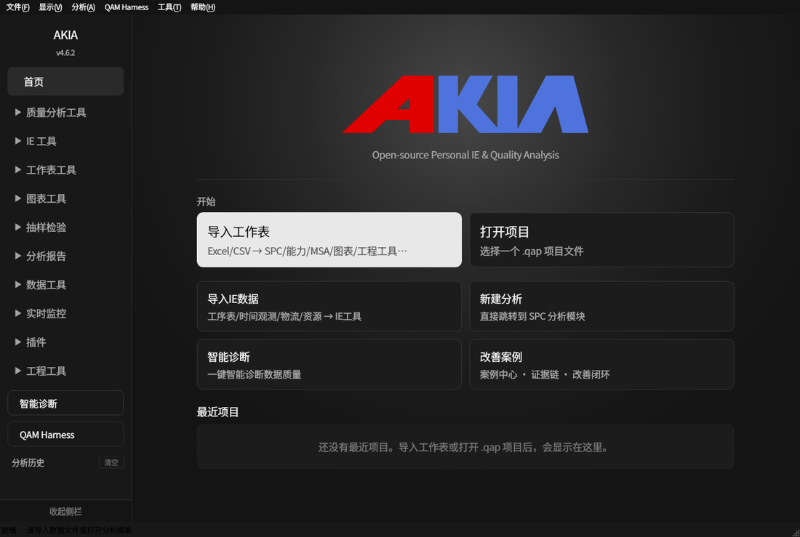
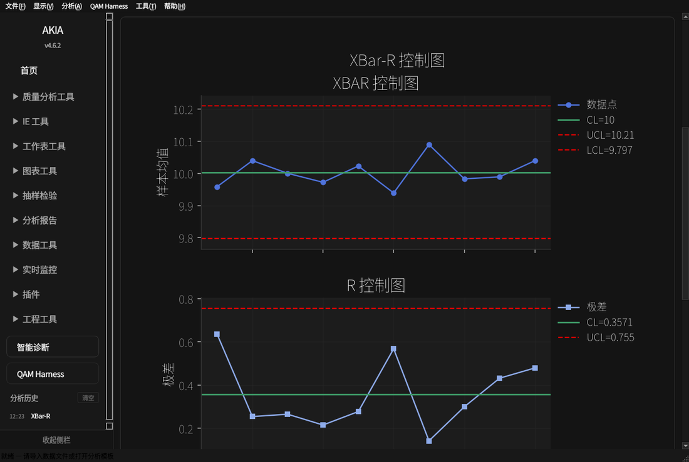
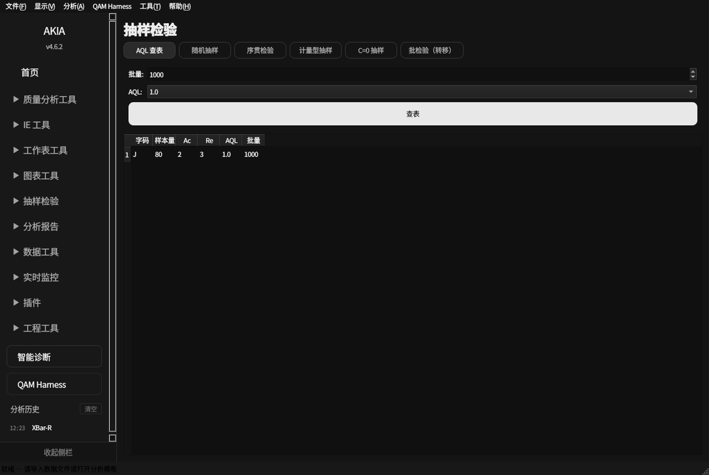

开始使用
AKIA 是本机离线运行的工业工程与质量分析软件，无需账号。下文按操作路径说明：入口、界面反馈与结果。
四条起步路径
1. 启动
操作Linux 运行 AKIA-4.7.0-x86_64.AppImage；Windows 从开始菜单打开。
界面左侧为功能侧栏，右侧为欢迎页。
结果可导入数据、打开项目，或直接进入抽样查表。

2. 导入数据或打开项目
操作欢迎页「导入工作表」或「文件 → 导入工作表」（Ctrl+O）。已有项目用「打开项目」或「文件 → 打开项目 (.qap)」。
界面工作表支持 Excel / CSV；项目文件为 .qap。IE 工时用「导入 IE 数据」，数据库用「导入数据库」。
结果数据载入当前会话，状态栏显示来源。后续分析页共用这份数据。
测量列以特性命名（如「直径」）。数据库单表上限 10 万行；超出时提示截断，分析仅基于已载入行。
3. SPC 控制图
操作侧栏「质量分析工具 → SPC 控制图」，选择类型与测量列后按 F5 运行。
界面默认 XBar-R、子组大小 5；规格限按需填写 USL / LSL。
结果上方为控制图（CL、UCL、LCL 与判异点），下方为图表选项与数值结论。普通滚轮翻页，Ctrl+滚轮缩放横轴。

4. AQL 抽样查表
操作侧栏「抽样检验」，保持「AQL 查表」，填写批量与 AQL 后点「查表」。
结果给出字码、样本量、Ac / Re。无需先导入工作表。

界面结构
| 区域 | 说明 |
|---|---|
| 侧栏 | 质量分析、IE、图表、抽样等分组。可收起（Ctrl+B）。 |
| 分析页 | 上方参数与数据，下方结果（图、选项、结论）。 |
| 菜单 | 文件：导入 / 项目 / 导出。工具：设置、批量调度、产线配置、告警与看板。帮助：使用指南（F1）。 |
| 显示模式 | 「显示 → 显示模式」或 F11，适于投屏。 |
分析模板与批量
操作「文件 → 导入分析模板」（JSON 或 Excel）。多份模板排队用「工具 → 批量调度」。
结果按模板中的列名与规格限依次执行。字段说明见「帮助 → 模板格式说明」。
最小 JSON 示例
{
"analyses": [{
"analysis_type": "xbar_r",
"data_sheet": "Sheet1",
"measurement_column": "直径",
"subgroup_size": 5,
"usl": 10.5,
"lsl": 9.5
}]
}
亦可使用单一 analysis 对象。Excel 中每个工作表为一项分析（A 列参数名，B 列参数值）。
可用分析类型（25 种）
| 类别 | analysis_type |
|---|---|
| 控制图 | xbar_r xbar_s imr p_chart np_chart c_chart u_chart |
| 过程能力 | normal_capability non_normal_capability between_within_capability |
| MSA | gage_rr_crossed gage_rr_nested linearity_bias attribute_agreement |
| 假设检验 | t_test_1sample t_test_2sample t_test_paired anova_oneway anova_twoway normality_test variance_test |
| DOE | factorial_design response_surface doe_analysis box_behnken |
必填：analysis_type、data_sheet、measurement_column。可选：subgroup_size、usl、lsl、target、confidence_level。
模块总览
质量分析工具
| 页面 | 输出要点 |
|---|---|
| SPC 控制图 | XBar-R/S、I-MR、P/NP/C/U、CUSUM、EWMA、Laney、Hotelling T² 与判异 |
| 过程能力 | Cp、Cpk、Pp、Ppk 与直方图 |
| MSA | Gage R&R、偏倚、线性、属性一致性 |
| 假设检验 | t 检验、ANOVA、正态性与方差等 |
| 实验设计 (DOE) | 设计表、效应与 Pareto |
| 回归分析 | 拟合、R² 与残差图 |
图表工具
图表构建器、趋势、能力对比、汇总面板。
IE 工具
时间研究、工作抽样、线平衡、OEE、VSM、人机作业、标准作业组合、SMED、TPM。工时数据须经「文件 → 导入 IE 数据」单独导入。
线平衡可勾选「采用已确认标准工时」。仅当参与工序均已覆盖现行标准工时，方可记入基线或复测并写入证据账本；覆盖不全时软件将拒绝记入。
工程工具
可靠性、鱼骨图、柏拉图、FMEA、控制计划、8D、PPAP。
查看结果
- 结果区上方为图表，下方左侧为图表选项，右侧为结论与数值表。
- 调整选项后图表即时刷新，无需重新运行分析。
- 图上右键可导出 PNG / SVG；完整结果经「文件 → 导出报告」输出。
图表选项随 .qap 项目一并保存。
导出
操作「文件 → 导出报告」，可选 Word、Excel、PDF、PowerPoint 或 HTML。
结果写入已运行的分析。连同数据留存请使用「文件 → 保存项目 (.qap)」。
「工具 → 报告模板」提供质量日报、月报、8D、PPAP 等版式；合规输出见导出报告的合规子菜单。
QAM Harness
操作菜单「QAM Harness」或侧栏底部入口。
结果未配置模型时仍可使用离线工具模式，调用本机同一套统计算法。云模型密钥在「工具 → 设置 → QAM Harness」配置；首次外发前需确认。原始数据表与密钥不会发送。
实时看板
操作「工具 → 实时看板」（需安装 requirements-server.txt 依赖）。
结果浏览器展示控制图、工位状态与 OEE；字号档位 A− / A / A+（A+ 适于车间大屏）。规格限来自产线配置。
- 「工具 → 产线配置 (plant.json)」：产线、工位、通道、USL、LSL、节拍与班次。
- 「工具 → 连接器健康」：Modbus、MQTT、OPC-UA 等数据源状态与重连。
- 「工具 → 告警中心」：筛选、确认与导出告警。
- 保留策略：
ts_raw_retention_days（原始点）、ts_rollup_retention_days（聚合）。 - 未设置
dashboard_token时生成随机令牌；本机访问写入 Cookie，地址栏不携带令牌。
硬件扩展
操作「工具 → 设置」启用设备扩展，连接 ESP32 或 MaixCAM。
结果采集值进入实时控制图。烧录与接线以设备说明为准。
安装
| 文件 | 说明 | |
|---|---|---|
| Linux | AKIA-4.7.0-x86_64.AppImage | chmod +x 后运行；可用同名 .sha256 校验。 |
| Windows | AKIA-Setup-4.7.0.exe | 安装后加入开始菜单。 |
发行包已自带运行环境，无需另行安装 Python，也无需联网。
常见问题
导入后分析页仍为空
结果区布局与交互
如何保留分析
模板提示不支持的分析类型
analysis_type；与「帮助 → 模板格式说明」一致。线平衡无法记入基线
数据库表只载入部分行
支持
缺陷与功能建议请提交 GitHub Issues。安全问题请使用私密漏洞报告渠道，勿在公开议题中披露细节。
AKIA is open source under the Apache License 2.0.